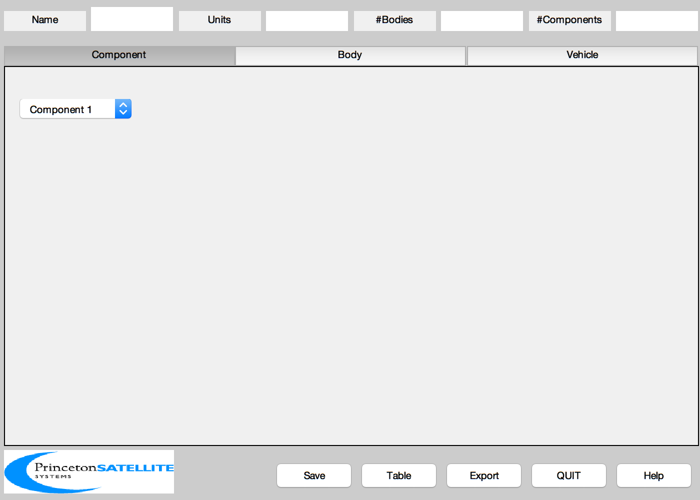
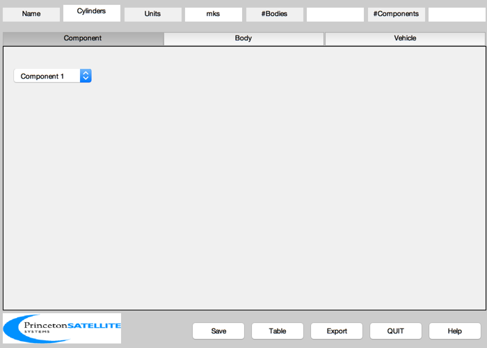
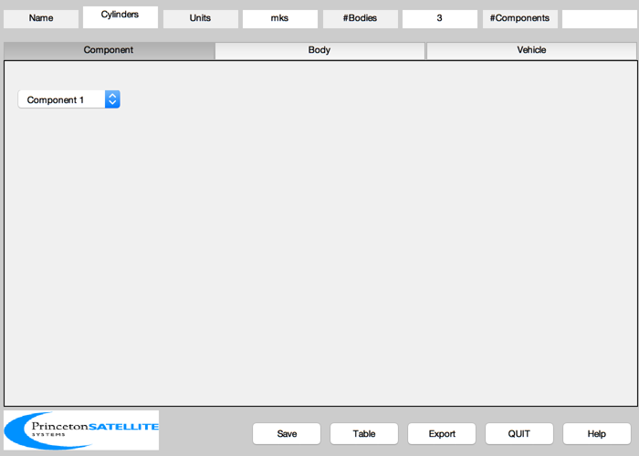
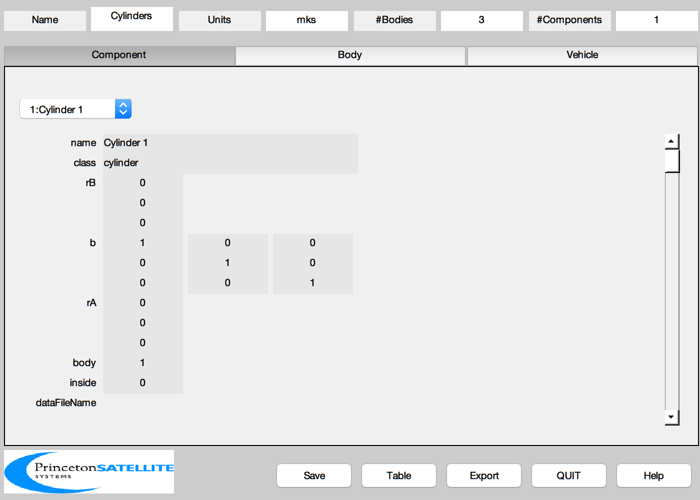
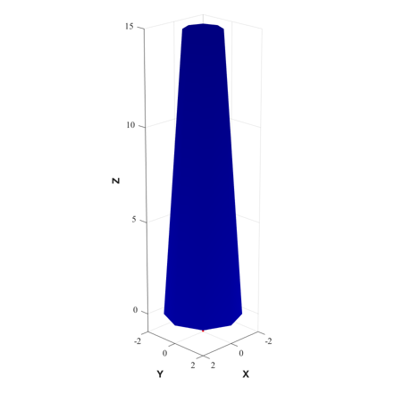
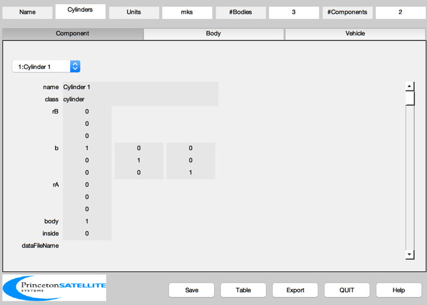
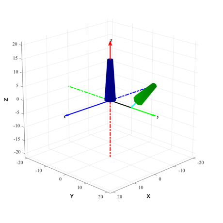
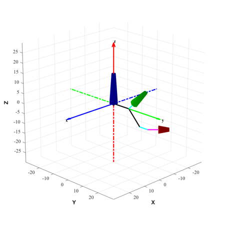

Demonstrate CAD geometry (vectors and rotations) using cylinders.
Cylinders are aligned with the height along the component Z axis. Each of the three bodies created has one cylinder assigned. Each body is rotated progressively about the X axis using bHinge and translated along Y using rHinge. The second and third components are translated along (local) Z using rA. The third component is also rotated 45 degrees about Y using b and translated along Z using rB.
Colors: The axes drawn have X (blue), Y (green), Z (red) and the components are colored in this order as well. The body hinge vectors are drawn in black. The component rA vectors are drawn in cyan and the rB vectors in magenta.
The mass properties will be computed automatically from the component properties. ------------------------------------------------------------------------ See also BHinge, BuildCADModel, CreateBody, CreateComponent, DrawSCPlanPlugIn, Eul2Mat, QLVLH, AddAxes, Rename ------------------------------------------------------------------------
Contents
%------------------------------------------------------------------------------- % Copyright (c) 2003, 2007 Princeton Satellite Systems, Inc. % All rights reserved. %-------------------------------------------------------------------------------
Data
%-----
r = 20000;
v = sqrt(3.98600436e5/r);
rECI = [r;0;0];
vECI = [0;v;0];
qLVLH = QLVLH( rECI, vECI );
q = qLVLH;
omega = [0;-v/r;0];
Initialize
%----------- BuildCADModel( 'initialize' );
Add spacecraft properties
%-------------------------- BuildCADModel( 'set name' , 'Cylinders' ); BuildCADModel( 'set units', 'mks' ); BuildCADModel( 'set rECI' , rECI ); BuildCADModel( 'set vECI' , vECI ); BuildCADModel( 'set qLVLH', qLVLH ); BuildCADModel( 'set qECIToBody', q ); BuildCADModel( 'set omega', omega );
Create bodies first
%-------------------- % First body %----------- % The body hinge expresses the rotation to the PREVIOUS body frame. % For the first body, this is equivalent to rotating into the inertial % frame. b1 = Eul2Mat([0;0;0]); bHinge.b = b1; rHinge1 = [0;0;0]; m = CreateBody( 'make', 'name', 'First Body', 'rHinge', rHinge1, 'bHinge', bHinge ); BuildCADModel('add body', m ); % Second body %------------ b2 = Eul2Mat([pi/4;0;0]); bHinge.b = b2; rHinge2 = [0;10;0]; m = CreateBody( 'make', 'name', 'Second body', 'rHinge', rHinge2, 'bHinge', bHinge,... 'previousBody', 1 ); BuildCADModel('add body', m ); % Third body %------------ b3 = Eul2Mat([pi/4;0;0]); bHinge.b = b3; rHinge3 = [0;10;0]; m = CreateBody( 'make', 'name', 'Third body', 'rHinge', rHinge3, 'bHinge', bHinge, ... 'previousBody', 2 ); BuildCADModel('add body', m ); % This creates the connections between the bodies %------------------------------------------------ BuildCADModel( 'compute paths' );
First cylinder. Make base wider than top.
%------------------------------------------ rA = [0;0;0]; m = CreateComponent( 'make', 'cylinder', 'rUpper', 1, 'rLower', 2, 'h', 15, 'n', 8,... 'faceColor', [0 0 1],'inside',0,... 'rA', rA, 'mass', 20, 'name', 'Cylinder 1', 'body', 1 ); BuildCADModel( 'add component', m ); g = BuildCADModel( 'get cad model' ); DrawSCPlanPlugIn( 'initialize', g ); y = axis; AddAxes(max(y),[],[],gcf); Rename('First Body',gcf); % Draw vectors %------------- rB1 = rHinge1; hold on plot3(0,0,0,'ko','linewidth',2) plot3([0 rB1(1)],[0 rB1(2)],[0 rB1(3)],'k','linewidth',2) axis equal view(135, 20) 
Second cylinder. Make it shorter and a different color (green).
Use rA to translate along z (but not b or rB)
%-------------------------------------------------------------------------- rB = [0;0;0]; b = eye(3); rA = [0;0;5]; m = CreateComponent( 'make', 'cylinder', 'rUpper', 1, 'rLower', 2, 'h', 10, 'n', 8,... 'faceColor', [0 1 0],'inside',0,... 'rA', rA, 'b', b, 'rB', rB, 'mass', 10, 'name', 'Cylinder 2', 'body', 2 ); BuildCADModel( 'add component', m ); g = BuildCADModel( 'get cad model' ); DrawSCPlanPlugIn( 'initialize', g ); y = axis; AddAxes(max(y),[],[],gcf); Rename('Add To Second Body',gcf); % Draw vectors %------------- rB2 = rB1 + b1*rHinge2; hold on plot3(0,0,0,'ko','linewidth',2) plot3([0 rB1(1)],[0 rB1(2)],[0 rB1(3)],'k','linewidth',2) plot3([rB1(1) rB2(1)],[rB1(1) rB2(2)],[rB1(1) rB2(3)],'k','linewidth',2) rAPlot = rB2 + b1*b2*rA; plot3([rB2(1) rAPlot(1)],[rB2(2) rAPlot(2)],[rB2(3) rAPlot(3)],'c','linewidth',2) rBPlot = rB2 + b1*b2*(rA + b*rB); plot3([rAPlot(1) rBPlot(1)],[rAPlot(2) rBPlot(2)],[rAPlot(3) rBPlot(3)],'m','linewidth',2) rCPlot = rB2 + b1*b2*(rA + b*(rB+m.mass.cM)); plot3([rBPlot(1) rCPlot(1)],[rBPlot(2) rCPlot(2)],[rBPlot(3) rCPlot(3)],'y','linewidth',2) axis equal view(135, 20) 
Third cylinder. Make it shorter and a different color (red).
Add use of b and rB.
%-------------------------------------------------------------------------- rB = [0;0;5]; b = Eul2Mat([0;pi/4;0]); rA = [0;0;5]; m = CreateComponent( 'make', 'cylinder', 'rUpper', 1, 'rLower', 2, 'h', 5, 'n', 8,... 'faceColor', [1 0 0],'inside',0,... 'rA', rA, 'b', b, 'rB', rB, 'mass', 10, 'name', 'Cylinder 2', 'body', 3 ); BuildCADModel( 'add component', m );
Finish and visualize the completed model
g = BuildCADModel( 'get cad model' ); DrawSCPlanPlugIn( 'initialize', g ); y = axis; AddAxes(max(y),[],[],gcf); Rename('Add To Third Body',gcf); % Draw vectors %------------- rB3 = rB2 + b1*b2*rHinge3; hold on plot3(0,0,0,'ko','linewidth',2) plot3([rB1(1) rB2(1)],[rB1(2) rB2(2)],[rB1(3) rB2(3)],'k','linewidth',2) plot3([rB2(1) rB3(1)],[rB2(2) rB3(2)],[rB2(3) rB3(3)],'k','linewidth',2) plot3([rB2(1) rAPlot(1)],[rB2(2) rAPlot(2)],[rB2(3) rAPlot(3)],'c','linewidth',2) rAPlot = rB3 + b1*b2*b3*rA; plot3([rB3(1) rAPlot(1)],[rB3(2) rAPlot(2)],[rB3(3) rAPlot(3)],'c','linewidth',2) rBPlot = rB3 + b1*b2*b3*(rA + b*rB); plot3([rAPlot(1) rBPlot(1)],[rAPlot(2) rBPlot(2)],[rAPlot(3) rBPlot(3)],'m','linewidth',2) rCPlot = rB3 + b1*b2*b3*(rA + b*(rB+m.mass.cM)); plot3([rBPlot(1) rCPlot(1)],[rBPlot(2) rCPlot(2)],[rBPlot(3) rCPlot(3)],'y','linewidth',2) axis equal view(135, 20) %--------------------------------------